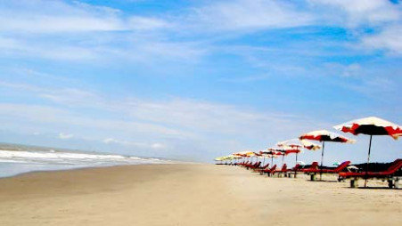
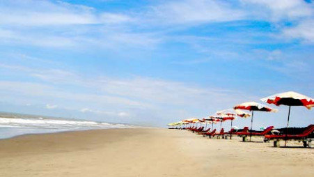
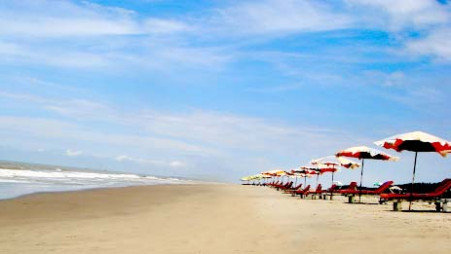
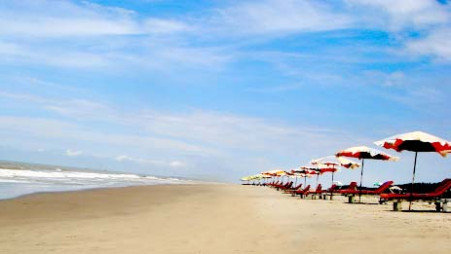
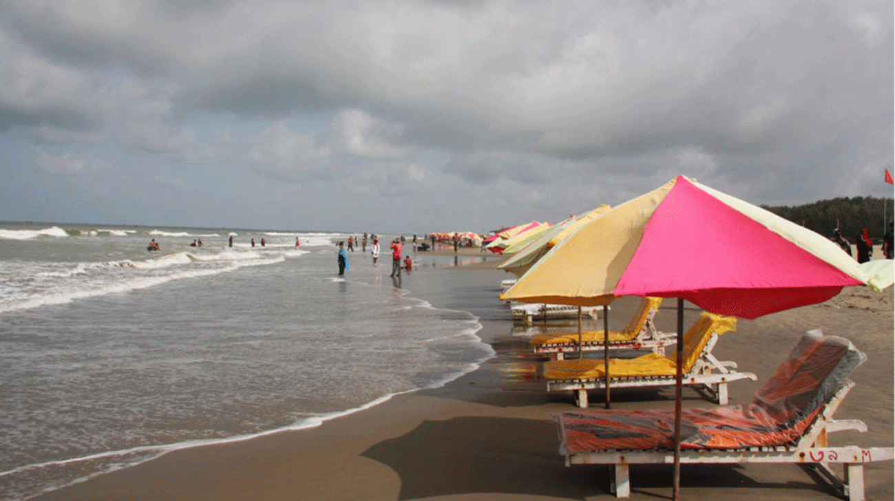

Cox's Bazar (Bengali: কক্সবাজার, pronounced [kɔksbadʒaɾ]) is a city, fishing port, tourism centre and district headquarters in southeastern Bangladesh. It is famous mostly for its long natural sandy beach, and it is infamous for the largest refugee camp of the world. It is located 150 km (93 mi) south of the divisional headquarter city of Chittagong. Cox's Bazar is also known by the name Panowa, which translates literally as "yellow flower". Another old name was "Palongkee". The modern Cox's Bazar derives its name from Captain Hiram Cox, an officer of the British East India Company, a Superintendent of Palongkee outpost. To commemorate his role in refugee rehabilitation work, a market was established and named after him. The municipality covers an area of 6.85 km2 (2.64 sq mi) with 27 mahallas and 9 wards and as of 2012 had a population of 51,918.[2] Cox's Bazar is connected by road and air with Chittagong.[3][4]
The name Cox's Bazar originated from the name of a British East India Company officer, Captain Hiram Cox, who was appointed as the Superintendent of Palonki (today's Cox's Bazar) outpost. He succeeded Warren Hastings, who became the Governor of Bengal following the British East India Company Act in 1773. Cox embarked upon the task of rehabilitation and settlement of the Arakanese refugees in the area.[6] He rehabilitated many refugees in the area, but died in 1799 before finishing his work. To commemorate him, a market was established and named after him, called Cox's Bazar. Cox's Bazar was first established in 1854 and became a municipality in 1869.[5]
Bangabandhu Sheikh Mujib Safari Park: Bangabandhu Sheikh MujibSafari Park is the first Safari Park in Bangladesh. Dulahazara Safari Park was developed on an undulating landscape of around 2,224 acres (9.00 km2) of area at Chakaria Upazila in Cox's Bazar District. The nature of the forest is tropical evergreen and rich with Garjan, Boilam, Telsur, and Chapalish along with herbs, shrubs, and creepers. Safari Park is a declared protected area where the animals are kept in a fairly large area with natural environment and visitors can easily see the animal whenever they visit by bus, jeep or on foot. This park was established on the basis of South Asian model. This safari park is an extension of an animal sanctuary located along the Chittagong-Cox's Bazar road about 50 km (30 mi) from Cox's Bazar town. The sanctuary itself protects a large number of wild elephants which are native to the area. In the safari park, there are domesticated elephants which are available for a ride. Other animal attractions include lions, Bengal tigers, Crocodiles, Bears, Chitals and lots of different types of birds and monkeys.which is a wonderful project to attract the tourist.
